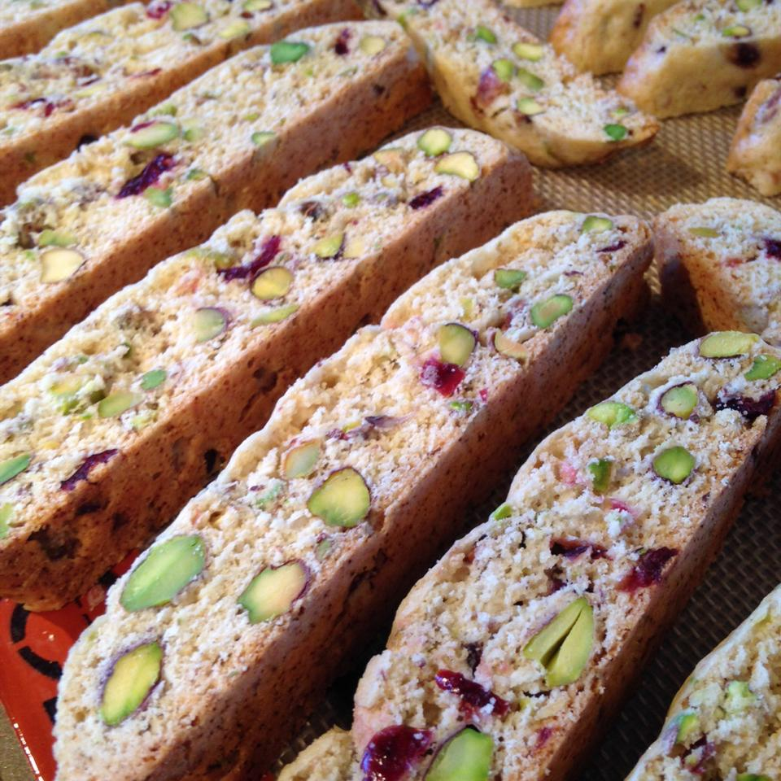

Cranberry Pistachio Biscotti

Recipe Description
Red cranberries and green pistachios combine well here to help spread holiday cheer.
Ingredients
- 1/4 cup EVOO
- 3/4 cup sugar
- 2 teaspoons vanilla extract
- 1/2 teaspoon almond extract
- 2 eggs
- 1 3/4 cups all-purpose flour
- 1/4 teaspoon salt
- 1 teaspoon baking powder
- 1/2 cup dried cranberries
- 1 1/2 cups pistachio nuts
Instructions
- Preheat the oven to 300 degrees F (150 degrees C)
- In a large bowl, combine oil and sugar until well blended. Mix in vanilla and almond extracts, then beat in the eggs. Combine flour, salt, and baking powder before gradually stirring into the egg mixture. Mix in cranberries & nuts by hand.
- Divide dough in half. Form 2 logs (12x12 inches) on a cookie sheet that's lined with parchment paper. If dough is too sticky, wet your hands with cool water to handle the dough more easily.
- Bake for 35 mins or until logs are light brown. Remove from oven and let cool for 10 minutes. Reduce oven heat to 275 degrees F (135 degrees C).
- Cut logs diagonally into 3/4 inch thick slices. Lay on sides and bake another 8 to 10 mins, or until dry. Then cool.